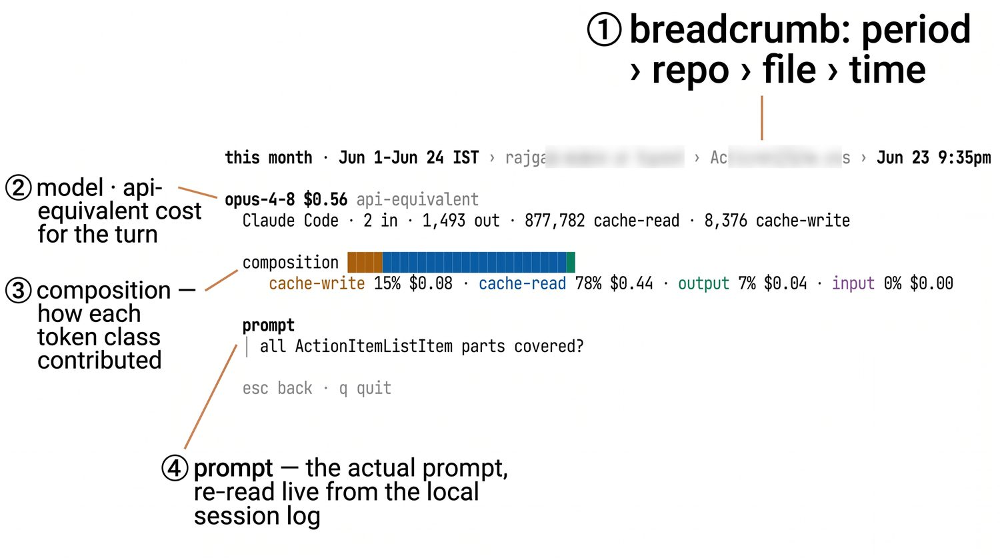

From a day's total down to a single turn.
Drill from a day down to a single turn's token-by-token cost. Open any number to see what it's made of, re-read live from your local session log and never guessed from a cache.

Open any number
day → session → file → turn. Each ↵ goes one level deeper, down to the prompt.
Token-by-token
Input, output, cache-read, and cache-write, each priced separately, the way the API would bill it.
Re-read live
Evidence is pulled from your logs at view time, so the receipt is always live.